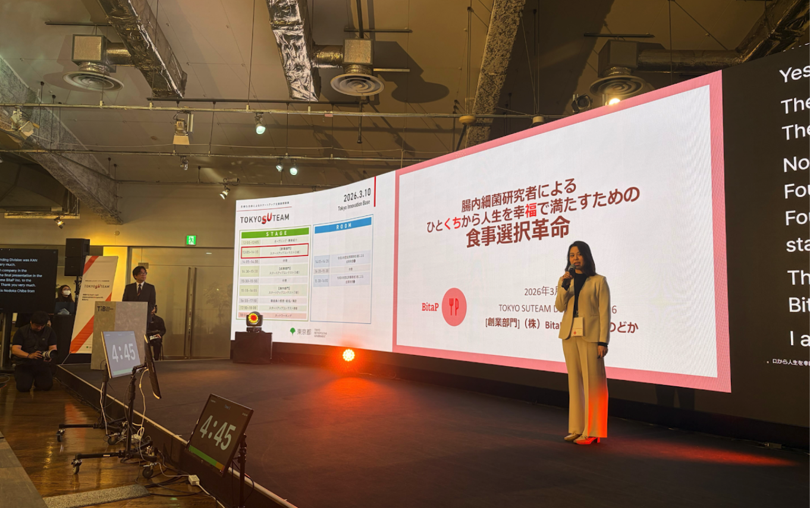
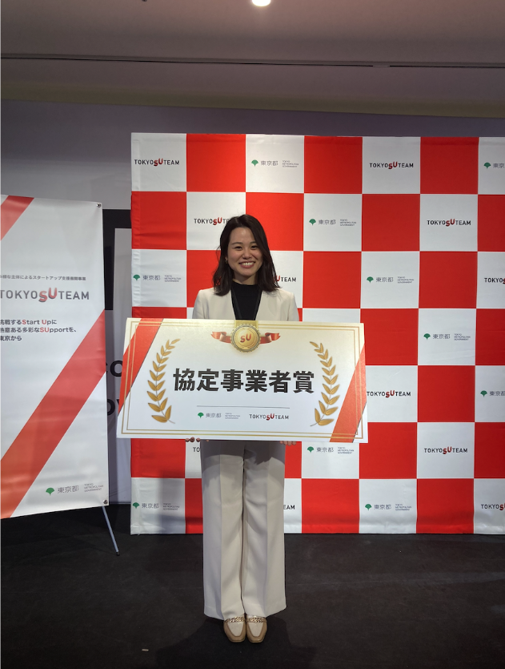

2026/03/10
【登壇情報】TOKYO SUTEAM DEMO DAYに登壇しました
株式会社BitaP（本社：東京都、代表取締役：千葉のどか）は、東京都が主催するスタートアップ支援プログラム「TOKYO SUTEAM」の成果発表イベント「TOKYO SUTEAM DEMO DAY 2026」において、登壇および協定事業者賞を受賞いたしました。
TOKYO SUTEAMは、東京都が採択した事業者がスタートアップ企業に対して支援を行うプログラムであり、本イベントはその1年間の成果を発表する場として開催されました。登壇企業は、各支援事業者からの推薦および東京都による選抜を経て選出されており、創業部門・海外部門・成長部門の3区分において、各部門約5社が登壇しました。
BitaPはアカデミスト株式会社の支援のもと本プログラムに参加し、創業部門の代表として、腸内細菌研究の知見を活用した食事設計事業について成果報告を行いました。
また、本イベントに登壇したすべてのスタートアップに対し「協定事業者賞」が授与され、BitaPも本賞を受賞いたしました。
BitaPは今後も、「日常のひとくちから活力や"口福"を生み出す」食の実現に向けて、事業の社会実装を進めてまいります。
【デモデーの詳細】
https://tokyosuteam.metro.tokyo.lg.jp/event/1796/
【アカデミスト社】
https://www.corp.academist-cf.com/

